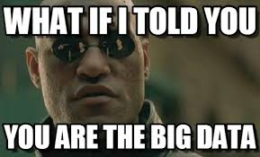

Life on the Grid in 2014
I've been working in the tech industry for mumblemumble years now, and I've seen every last problem out here. It would make sense for me to write about the lack of diversity in tech, but I don't think so. I could make several valid points that illustrate the facts clearly and convincingly, but I won't. In fact, hell no. I'm sick to my back teeth of talking about the lack of diversity in tech. I spent years and years in the tech industry completely miserable because of of ignorance, insecurity, hate disguised as meritocracy, and weak agendas. When was the last time you changed your mind about one of your closely held beliefs? Think long and hard...did you come up with anything? I have found that the most efficient method of driving yourself up a wall, losing your peace of mind, becoming infuriated, and wasting your time is trying to convince someone to change their mind. I once spent years trying to convince someone to change their mind about me- a topic on which I am the leading authority! It didn't work. It was a waste of time and energy and it didn't do anything but make me sick. Can't do it. People seldom change their minds after an argument, and having their beliefs challenged usually leads to an argument. Can't. Do it. If you find another way to help resolve the issue of diversity in tech, let me know. I'm there.
Now, I believe that the most pressing issue in tech today is big data, and specifically personal data about all of us. Based on all of the data collated about you to this point in your life, you are an absolute open book. The DMV knows the weight on your license is a lie. Uncle Sam knows about the money you make cutting hair for cash on the side. The casino knows where you work, how much you make, and when you get paid. The cable compay knows about that movie you watched- twice- in the app on your iPad, so Apple knows, too, and they told Facebook. The cops know you and your sister are buying counterfeit bus cards- whether you two know or not! Don't even get me started on Amazon.
Rewards cards, online banking, mobile phone location services, online dating profiles, mobile apps, debit cards, Google, Facebook, and LinkedIn, the NSA... the list of entities collecting, aggregating, and interpreting data about us is long and not well understood. Who reads the TOS and contracts offered to us several times a day, and for those who do, who reads the updates and supplements provided as these providers modify the original terms to better suit their new business ventures. These days, when I am approached by an obvious scam, I wonder if my data was hacked or if some company I have legitimate business with served me up on a silver platter.
Who gets your data? The highest bidder, of course! Who is the highest bidder? Who knows!?!? That's none of our business. In most cases, the data is sold to people who simply want to sell us on some item or idea. The rest of the buyers are the scoundrels of the world who will stop at nothing to steal your money and impersonate you to steal from others. While I'm failry confident in my ability to back away from approaching danger online, I worry about my parents and the other senior citizens I care about. They are emailing and texting and updating their antivirus, but they aren't playing offense against the internet monsters like younger generations. They get scam phone calls from Jamaica, texts from Prize Clearinghouses, and emails that spoof their banks and look scarily authentic until you inspect the actual hyperlink. All of these overtures come from some crooks who scanned unknown collections of data to tease out the most vulnerable targets. I hate these people.
The laws protecting our digital privacy are weak and outdated. They haven't had a major update in a decade One modificaton to the laws governing how companies can use our data should be that the organizations that collect and sell the data should disclose the value of the data. In other words, how much money does the data they collect command? I think I have a right to know that Nordstrom made $2 selling my purchase history and address or that Facebook sold me down the river for $.30. If consumers understood the value of their personal details, perhaps they would be more thoughtful about protecting it and declining to provide it when it isn't necessary. The industry trend is away from privacy and toward profit, so waiting and hoping that legal altruism and legislative common decency will prevail on this topic is dangerous. We have to do more to act in our own best interests before it is too late.